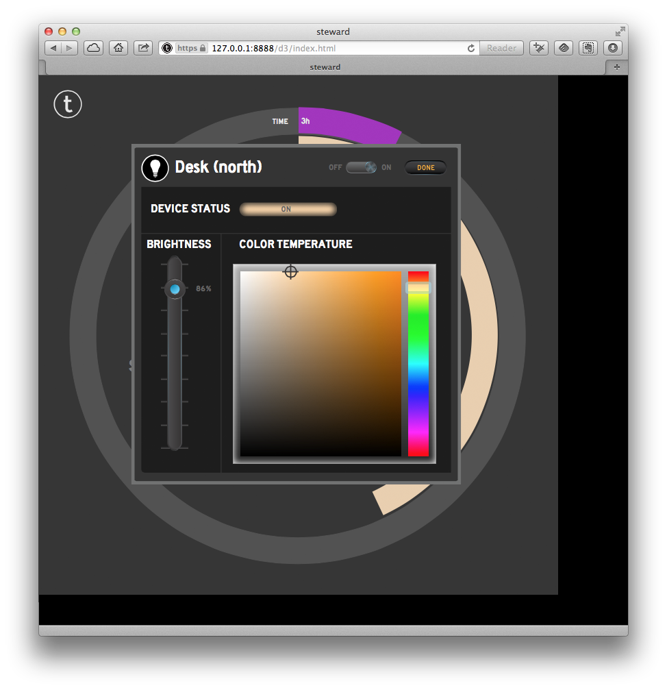
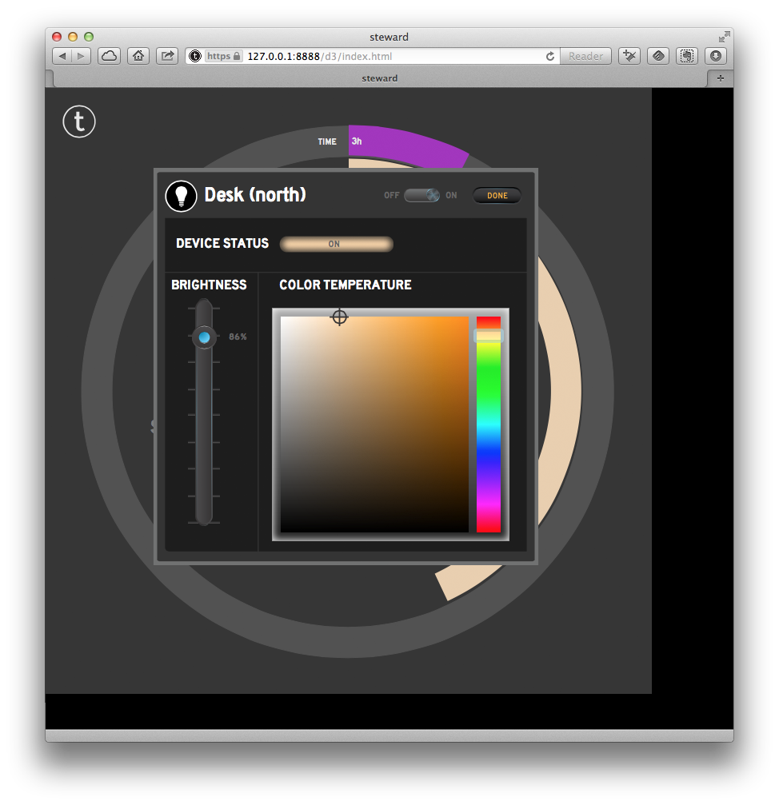

Instructions for starting the Steward
If you installed the steward using the the Raspberry Pi or Beaglebone Black disk images these have been configured to automatically start the steward on boot. You should jump directly to the section on "What to do when you start the steward".
Otherwise in the steward directory type
sudo ./run.sh
to start the steward manually. When the steward starts, it will automatically discover devices via a variety of mechanisms:
It will look on all attached networks for things via SSDP, TCP port scanning, and MAC address prefixes.
It will look for Bluetooth low energy things.
It will look for USB things.
The steward also needs your help. When the steward starts from scratch, it doesn't know it's physical location. In order to calculate solar events such as sunrise, it needs to know it's physical coordinates.
What does the run.sh do?
The run.sh script does three things:
The script changes the group/permissions for /dev/bpf* and flushes the arp caches. The steward runs libpcap in order to examine arp traffic. On most systems, the Berkeley Packet Filter (bpf) is used by libpcap in order to capture network traffic. In turn, libpcap reads from devices named /dev/bpf* - so these files need to be readable by the steward. The run.sh script assumes that the steward is running under group admin, so that's what it changes the group to.
The script reads the nvm initialization script in order to set the environment for node.js.
The script runs the node program on the index.js file and the steward begins.
You will probably want to customize this script for yourself. When the script starts, it will bring a lot of stuff on the console. Over time, the verbosity will decrease, but for now, it should give comfort...
The first time you run the steward
On startup the steward will bring up a web interface on port 8888. If you're using the Raspberry Pi or Beaglebone Black disk images they have been configured to be reachable on your local network as steward.local using mDNS. Go to,
https://steward.local:8888
Alternatively if you installed the the steward from source either on a Raspberry Pi, a Beaglebone Black, or on an OS X or Linux machine then you should go to,
https://XXX.XXX.XXX.XXX:8888
where XXX.XXX.XXX.XXX is the IP address of the host you installed the steward onto. You will be presented with a drop down warning you about the steward's certificate not being trusted. Please be sure to "permanently accept" the certificate as valid for the associated IP address.
If you do not do permanentaly accept the certificate then the web client will not function correctly.
###Installed on localhost?
If you installed the steward on your local machine—the machine that is also running the browser you intend to connect to the web client—you should not connect to the steward using https and port 8888. Instead go unecrypted to the locahost on port 8887.
http://127.0.0.1:8887
In this case you will not be asked about certificates.
The d3 client
After connecting to the steward you should see the initial login screen for the steward's web client,
since this is the first time we have started the steward we need to Create/Add Account. Click on the button to be taken to the client authentication page where you can create the first account
Note: The next time you visit this page—after creating your first account—you will be presented with a login box which you must authenticate to add additional user accounts.
The steward uses time-based one-time passwords (TOTP) to allow you to authenticate. I[f you are on your home network you can create authentication credentials using a smart phone running Google Authenticator for iOS or Android, or SecuriToken for the Mac.
Please see also a comprehensive list of implementations.
Creating a User Account
Scroll down and enter a short, and descriptive name for your first account,
here I've chosen "admin" and "Administrator." I've left the permissions for this account as "master."
_Note: If you accidentally connect to the web client on localhost using https and port 8888 you will recieved a red "unauthorized" error message when you try and create a user account. When connected to localhost you should connect using http and port 8887.
However if the account is created successfully you will see a green "success" code along with a bar code.
This bar code can be read by the Google Authenticator application,
which will generate the time-based one-time password needed to connect to the steward. You can check that the account has been correctly created by using the TOTP generated by Google Authenticator application in the check form,

it should report "authorized by master". The new user will also be added to the Listing of Users and Clients at the bottom of the page.
Note: After you created an account, did you notice the solidus ('/') and number appended to the short name? That number identifies the client that is now associated with the user. You will need to add the solidus and number to your short name when authenticating to the d3 client in future.
Note: If you return to the Create/Add Account screen in future you will be asked to authenticate yourself. You will only be able to create a user without authentcating if no users are registered with the steward.
Connecting to the Steward
Now you have created a user account you should return to the main monitoring screen, and enter your account—remembering to postpend the solidus and number to the short name—and one time login code.
If you incorrectly enter the clientID/response you will be authorised as "read only"
and recieve and error message. Otherwise you will be presented with the main screen of the d3 example client,
showing the devices which the steward has found.
NOTE: If you have Philips' Hue light bulbs, remember to push the pairing button on the hub at this point to advertise to allow the steward to talk to your light bulbs. You should also go ahead and dismiss the red popup along the top of the client.
From here you can click on individual things, like for instance a light bulb, and be offered some basic controls,
 

Configuring the steward
For now you need to configure the steward using the d3 example client to create a "place" actor. If you look at the d3 client home screen you'll see a small cog wheel in the top left hand corner—to the left of the "Change Login" button. Click on this,
to bring up the configuration screen. This lets you do a number of things;
- Change the steward's name
- Enter a street address and latitude and longitude
- Change the units of measurement from metric to imperial and back again
- Turn security services of for client connections on the LAN
- Configure a number of Cloud Services including; Ecobee, Flower Power, Koubachi, MQTT, Nest, Netatmo, Prowl, Tesla, Wink, Xively
Note: To add an Ecobee service to the steward you need to be an authorised developer. At least for now please open a ticket and we'll help you through the process.
Developer's Console
The d3 client we've seen so far is intended as an example client and it only exposes a small subset of the steward's abilities. You can take a more detailed look at what's going on by going to the developer console,
http://127.0.0.1:8887/console.html
if you're connecting to a steward which is running on the local host, or
https://steward.local:8888/console.html
if you're connecting to the steward over the LAN.
where a full list of the available things, reports from these things, and other logging information can be found.
If you want to go beyond the capabilities of the d3 example client, for instance to make use of our rule engine, or other advanced capabilities, for now at least you'll have to write your own clients or use the other example clients provided.
Note: More information about the steward can be found by looking at the log. If you're starting the steward using the command line this will scroll up on the console in front of you, if you're using the provided disk images the log can be found in /var/log/steward.log